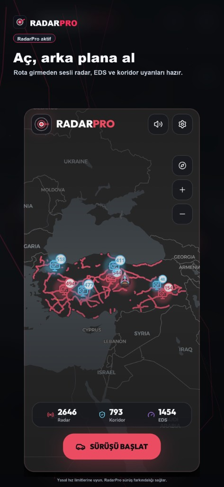
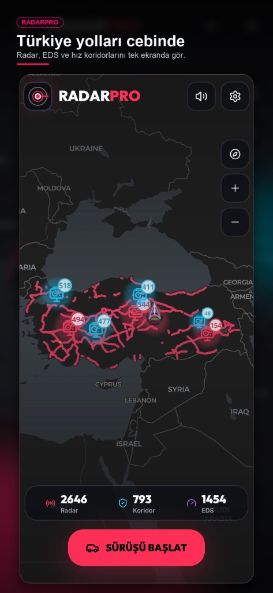

2.660
Radar noktası
Arka planda sesli uyarı — 2.660 radar, 802 hız koridoru ve 1.454 EDS. Ortalama hız ve neon HUD ile navigasyon açıkken bile yanınızda.

Gerçek yol verisiyle beslenen neon HUD. Her özellik somut bir faydaya bağlı — abartılı vaat yok.
Radar ve EDS noktalarına girmeden sesli ve görsel uyarı. Hızınızı ayarlamak için zaman kazanın.
Koridor girişinden çıkışa kadar otomatik hesap. Limit aşımı riskini erkenden görün.
Anlık ve ortalama hız neon HUD'da. Karanlıkta okunaklı, dikkatiniz yolda kalsın.
Özelleştirilebilir sesli bildirimler. Ekrana bakmadan yaklaşan noktaları duyun.
Otoyol, şehir girişi ve yoğun bölgelerde binlerce nokta haritada işaretli.
Sürüşe başladığınızda RadarPro devreye girer. Navigasyon veya başka uygulamadayken bile uyarılar sesli gelir.
Karanlık cam, neon vurgu, sürücü odaklı düzen — ekran görüntüleriyle keşfedin.
2.660 radar, 802 hız koridoru ve 1.454 EDS — güncel veriyle haritada, rotanız boyunca.

RadarPro sürüşü arka planda algılar; radar, EDS ve koridor uyarılarını sesli verir. Navigasyon veya müzik açıkken bile ekrana bakmadan bilin.